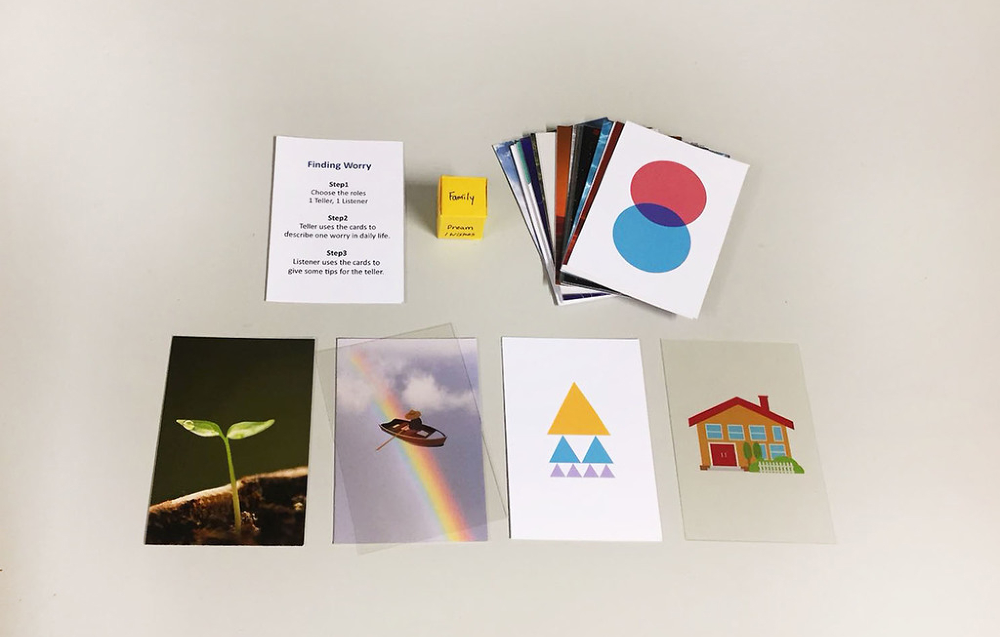

- Design Research
- Prototype
How can design help the mental problem?
Brief
This is a community design practice project. Our mission is to from a location we got which is Kilbrun, the west of London, find one problem there and then see how design can improve it.
According to the residents we interviewed, the area is accessible and safe. There are good parks, many primary and secondary schools, and also big range residential areas. Many families with young children live there. However, we noticed that there are many wellbeing programmes to help youngsters, such as sport and thoughts, gardening activities, group therapy. According to the reports from AddAction, more than 1 in 3 young people have thoughts of harming themselves, and less than 1 in 2 young people think that teachers and other staff provide the supports they need in schools.
Challenge
Since mental issue is a complex problem related to many aspects, which is impossible to find a solution for it. So how can we prevent the serious mental problem by a small action?
Design Research and Interview
Talking
From our first survey about how do you deal with your stress, the result shows that most of people tend to talk to someone even the topic is not related to the stress. According to one therapist we interviewed, talking therapy is a long-term interaction which enable people who suffered from the negative thoughts to organise and understand their feelings and then generate the new interpretations or actions.
People who have experienced the talking therapy state that the atmosphere in the room make them feel safe to talk and be not perfect.
Furthermore, Bill Bernat, a recovering addict living with bipolar condition and advocates for mental health awareness, suggests the Do's and Don'ts when talking to depressed friends in his ted talk. From his speech, 'Give depressed people a sense of control' and 'Don't say "Just get over it."' are impressed me, which is not easy for daily conversation.
Nature
Thrive is an institution about gardening therapy. Gardening therapy aims to help people to engage easily by growing plants and naturally interacting with people who have same interests. One of the most important factors in gardening therapy is engaging in the good nature.

After interviewing with people and therapist, we tried to understand how people use the space for the potential places we could have some experiments. As mentioned above, the atomsphere for conversation is important. Thus, our first tool is 'Relaxing Map', to find where is the place people go for relaxing. Most of the people go to Queen's Park because the scale and facility is ideal for them talking children or hanging out with friends. There is also a cafe in the middle of the park where provides games and books for parents and children.
Possibility - Amplify the Good
From our research and interviews, we wanted to amplify the good part of the talking therapy to see how it can implant into the daily life and make differences.
Talking is the key action, which plays an important role in expressing our thoughts and connecting with other people. However, talking, the basic and easy action, is not that easy in some situation. We carefully test the line when we talk about some specific topics, including talking about the worries or other negative thoughts. Hence, we want to extract the good part of talking therapy into daily conversation, improving the understanding and atmosphere.
Design - Small Actions in daily life
Rental Service
Thus, the end of the project, we came out with a rental service in Queen's Park and its cafe. People can rent the game or the drawing book in the park.
Conversation Card Game - Talking Therapy
We tried the first version of the card game in Queen's Park, which aims to see if it is possible to create a conversation game about worry and use images to improve the conversation about emotions which are invisible. There are two roles, one teller and one listener, 40 cards with abstract shapes and one Chance Box which has many tip cards inside. In this game, teller will tell one daily worry and listener will give some tips by using cards. If the listener doesn't have any ideas, she/he picks one card from the chance box.
After the game, it is obvious that children and adults all enjoy in the game, and feel safe to give tips and tell the worry. The atmosphere is relaxing. However, the images on the cards is too abstract to generate the tips.
After several exeperiments with the public, psychologists and therapist, we developed the cards and simplified the instructions. Also we collected the topics for children and adultsm and made dices for easier to think about the worry. It is more accessible.
Worry Monster - Art Therapy

From our interviews with parents and therapist, some people are not good at talking about their feelings, especially people suffering from complex thoughts. Art therapy does not focus on the solving their worries but focus on expressing. So the second activities, we tried something like art therapy. We visualised the worry as a character, which is easier to organise and extend. Also, for children, it is easier to educate them how to face their worry. Thus, we used 'Overcoming the monster' story plot to develop a journey for a worry monster and a Happy Monster. At the end, this drawing activity is developed in a drawing book for children and parents.
The card game and drawing activity we developed are created to intervent into accumulated negative emotions or thoughts. Further, the card game is put in one of the mental clinics in London now.